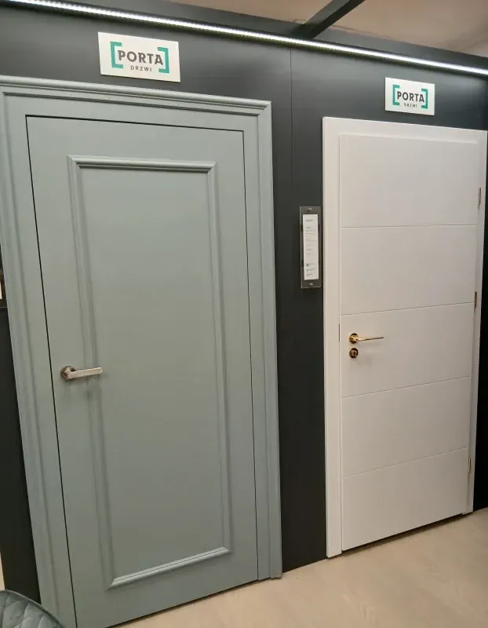
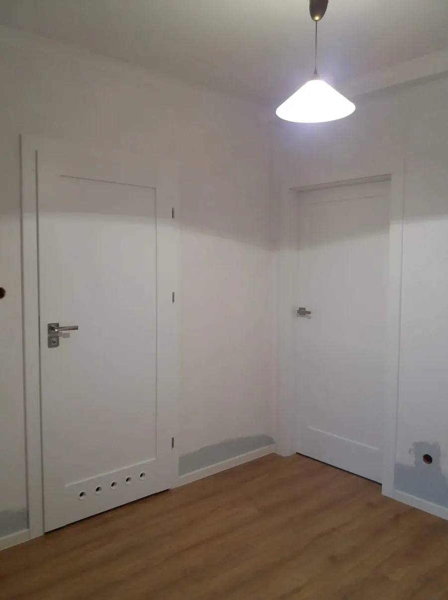
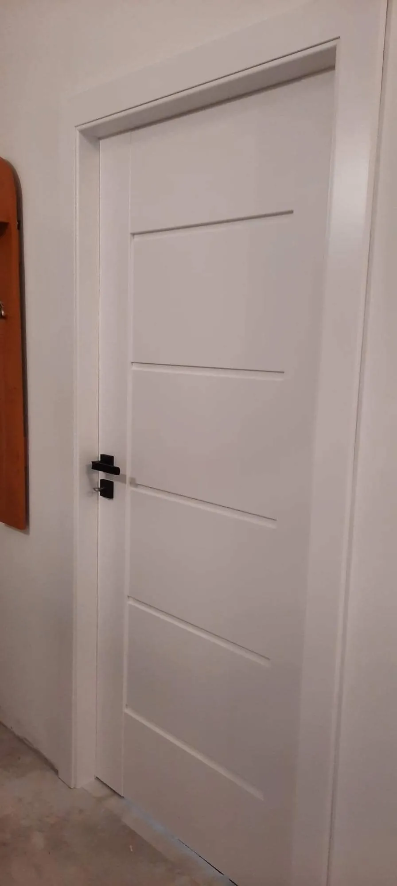
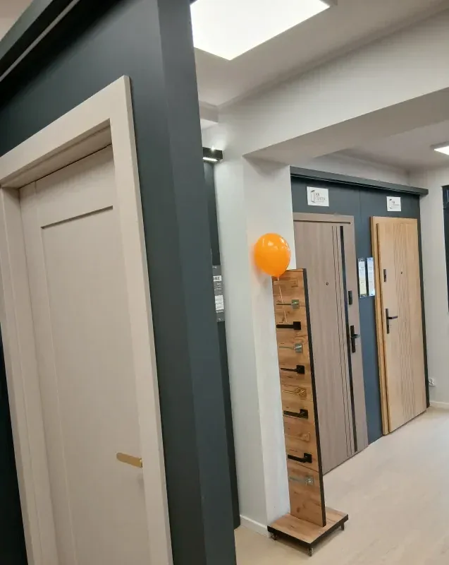
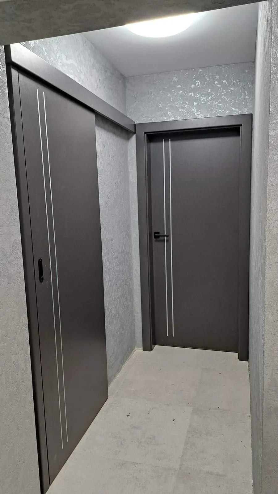
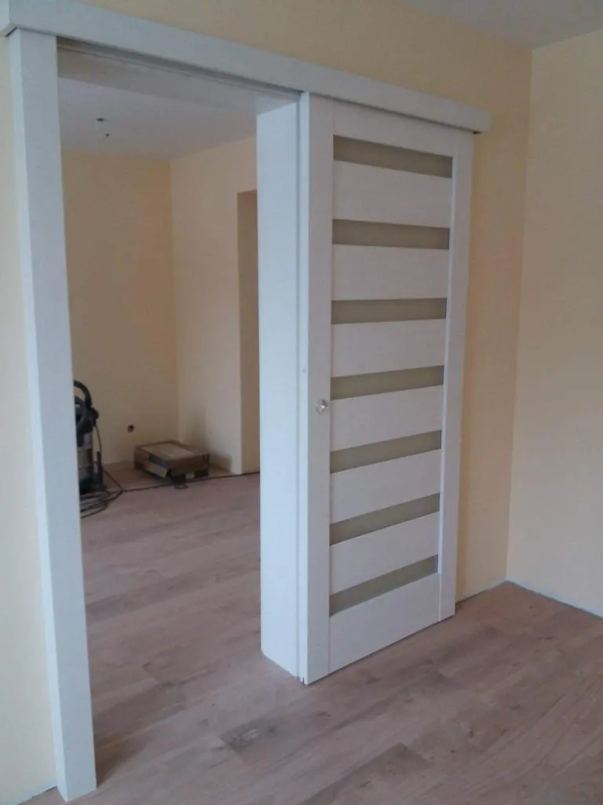
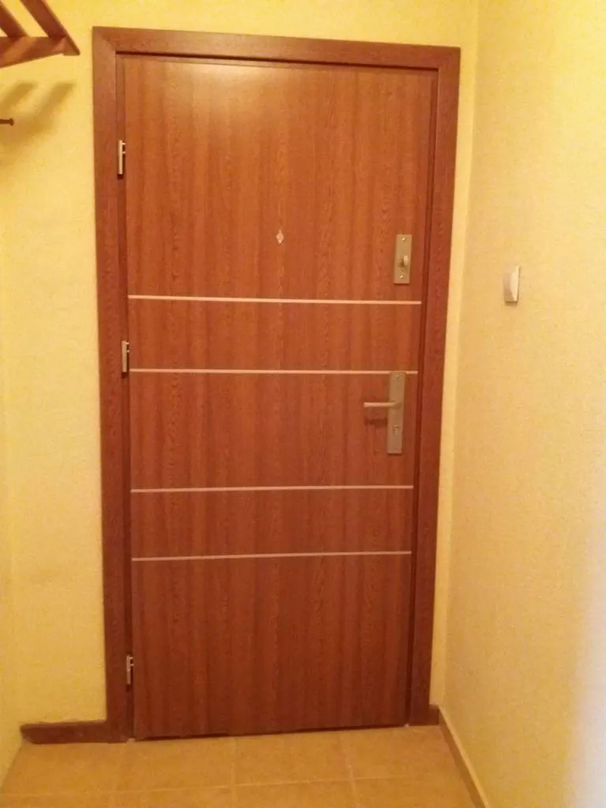
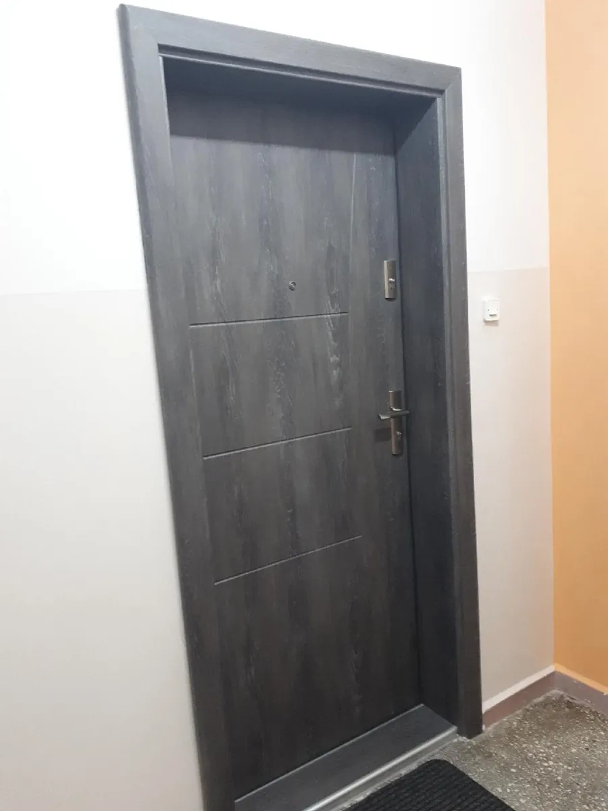

Drzwi w Głogowie z pomiarem i montażem
Drzwi wewnętrzne, łazienkowe, przesuwne, do mieszkań i zewnętrzne. Ekspozycja w salonie przy ul. 1 Maja 16, a montaż robi nasza ekipa – od 2017 roku.
Pomiar: 695 898 059
Drzwi wewnętrzne do pokoi
Gładkie, frezowane, ramiakowe i z przeszkleniem – w bieli, okleinach drewnopodobnych, szarościach i z czarną ościeżnicą. Przy wyborze warto uwzględnić wygląd, konstrukcję, sposób otwierania, przeszklenie i właściwości akustyczne.
- Przylgowe i bezprzylgowe
- Ościeżnice regulowane i stałe
- Klamki i wkładki do kompletu
Na ekspozycji m.in. DRE, Porta i Erkado.


Drzwi łazienkowe
Z tulejami lub podcięciem wentylacyjnym i zamkiem z blokadą. W tym samym wzorze co reszta drzwi w mieszkaniu, żeby korytarz wyglądał spójnie.
- Tuleje lub podcięcie wentylacyjne
- Zamek z blokadą WC
- Wzór jak pozostałe drzwi

Rewersyjne, ukryte i łamane
Drzwi, które mają zlewać się ze ścianą albo zmieścić tam, gdzie zwykłe skrzydło blokuje przejście. Przy tych modelach o efekcie decydują milimetry, dlatego zaczynamy od pomiaru.
- Rewersyjne – skrzydło licuje ze ścianą
- Ukryte – do pomalowania na kolor ściany
- Łamane – do wąskich korytarzy i spiżarni


Drzwi szklane i loftowe
Szkło w czarnej ramie ze szprosami doświetla przedpokój i oddziela kuchnię, nie zamykając przestrzeni.
- Skrzydła całoszklane
- Rama ze szprosami w stylu loft
- Szkło przezroczyste i matowe


Drzwi przesuwne
Skrzydło przesuwa się wzdłuż ściany albo chowa w niej, zamiast otwierać się w pokój. Do garderoby, małej łazienki i między salonem a kuchnią.
- Systemy naścienne
- Systemy chowane w ścianie
- Skrzydła pełne i przeszklone


Drzwi do mieszkania w bloku
Drzwi wejściowe do mieszkania dobierzemy do wymiaru otworu i do drzwi wewnętrznych. Po pomiarze nasza ekipa je zamontuje.
- Wizjer i zamki
- Wyciszenie od klatki schodowej
- Kolory pasujące do drzwi wewnętrznych


Drzwi zewnętrzne z montażem
Drzwi zewnętrzne powinny zapewniać izolację i bezpieczeństwo, a ich stylistyka może uzupełnić elewację. Osadzamy je w stanie surowym i w wykończonych domach.
- Jedno- i dwuskrzydłowe
- Z przeszkleniem i pochwytem
- Montaż z regulacją okuć
Na ekspozycji m.in. Gerda, KMT i KR Center.


Czym różnią się drzwi wewnętrzne
| Rodzaj | Jak wygląda | Zawiasy | Kiedy wybrać |
|---|---|---|---|
| Przylgowe | Skrzydło nachodzi zakładem na ościeżnicę | Widoczne | Klasyczne wnętrza, rozsądny budżet |
| Bezprzylgowe | Skrzydło licuje z ościeżnicą | Ukryte | Nowoczesne aranżacje |
| Rewersyjne | Od strony otwierania licuje ze ścianą | Ukryte | Ościeżnica ma zniknąć z jednej strony |
| Przesuwne | Skrzydło jedzie po szynie lub chowa się w ścianie | Brak – wózki i prowadnica | Mało miejsca na otwieranie |
Pytania o drzwi
Co to znaczy, że drzwi są bezprzylgowe?
Skrzydło drzwi bezprzylgowych po zamknięciu licuje z ościeżnicą – nie ma wystającego zakładu (przylgi), a zawiasy są ukryte. Przylgowe mają zakład nachodzący na ościeżnicę i widoczne zawiasy.
Drzwi przylgowe czy bezprzylgowe – co wybrać?
Przylgowe są prostsze i zwykle tańsze, dobrze sprawdzają się w klasycznych wnętrzach. Bezprzylgowe dają gładką płaszczyznę i pasują do nowoczesnych aranżacji. W salonie zobaczysz oba rozwiązania obok siebie.
Czym różnią się drzwi łazienkowe?
Drzwi do łazienki mają otwory wentylacyjne – tuleje lub podcięcie – i zwykle zamek z blokadą WC. Dobierzemy je w tym samym wzorze co pozostałe drzwi w mieszkaniu.
Czy przed zamówieniem robicie pomiar?
Tak. Montaż poprzedzamy pomiarem otworów u klienta, dzięki czemu zamawiamy właściwe wymiary skrzydeł i ościeżnic.
Czy montujecie drzwi kupione w innym sklepie?
Pomiar, transport i montaż wykonujemy dla produktów kupionych w naszym salonie. Wtedy odpowiadamy za całość – od wyboru modelu po regulację.
Czy dojeżdżacie poza Głogów?
Tak. Pracujemy w województwach dolnośląskim, lubuskim i wielkopolskim, m.in. w Sławie i Wschowie. Zadzwoń, a potwierdzimy dojazd.
Wybrałeś drzwi? Zmierzymy otwory
Pomiary i montaż: 695 898 059.